Elegir cómo entrar

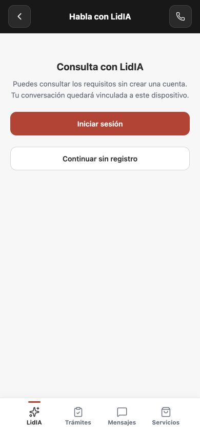
La sesión visitante pertenece a esta instalación.
Recorridos de la interfaz real con datos ficticios locales. Las capturas permiten revisar el diseño; las conexiones con LidIA, Zoho, OAuth y push requieren sus pruebas independientes.
Nueva conversación → elegir acceso → hablar → Atrás y continuar. Nombre y teléfono no se piden para iniciar.

La sesión visitante pertenece a esta instalación.
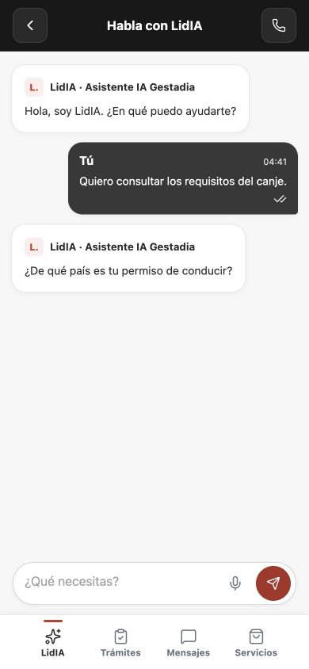
Texto literal. El chat activo no ofrece crear otro.
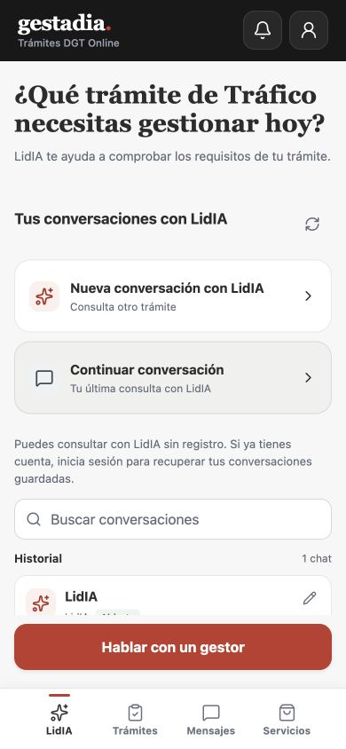
Continuar, nueva consulta e historial IA en LidIA.
Visitante: solicitar llamada voluntaria. Cuenta con contacto/trato y asignación: abrir el chat del gestor. Mensajes conserva únicamente las conversaciones humanas.
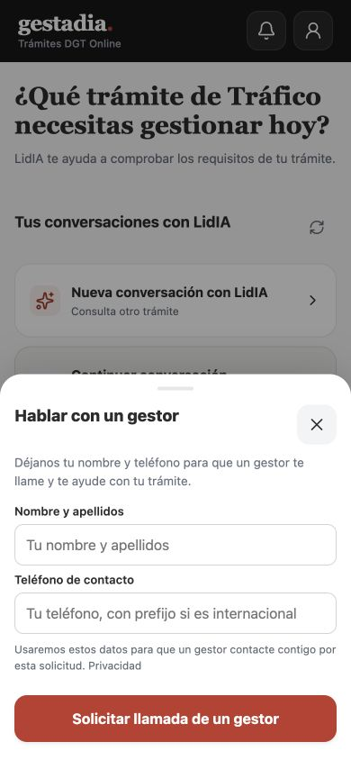
Propósito explícito y privacidad. Confirmación remota pendiente de prueba CRM.
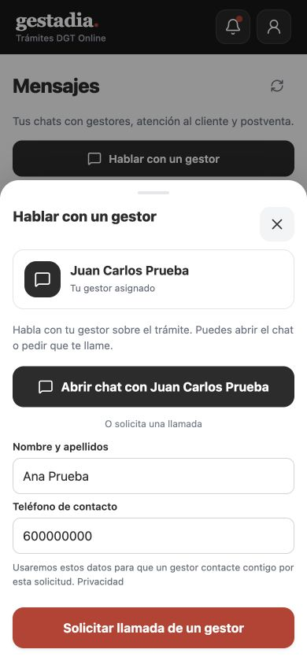
Servidor resuelve contacto, expediente y asignación.
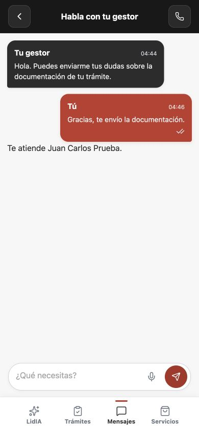
Misma conversación humana; mensaje del cliente rojo.
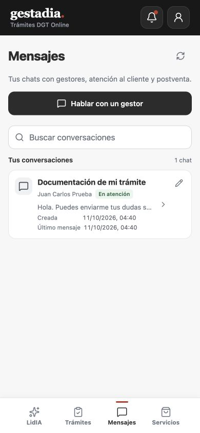
Buscar, estado, fechas y acceso al chat.
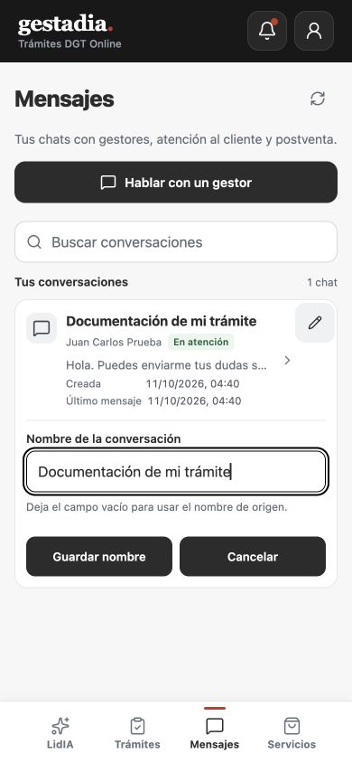
Cancelar vuelve a la fila sin guardar.
Un aviso abre su recurso autorizado después de confirmar lectura. Perfil explica contraseña, vinculación social y preferencias.
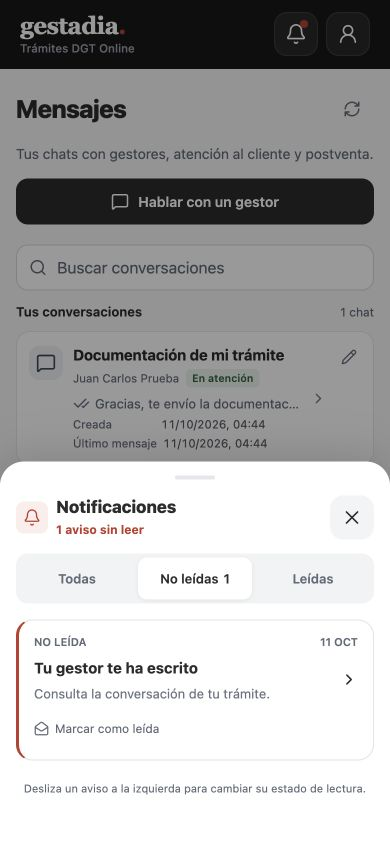
Pulsar abrió la conversación correspondiente.
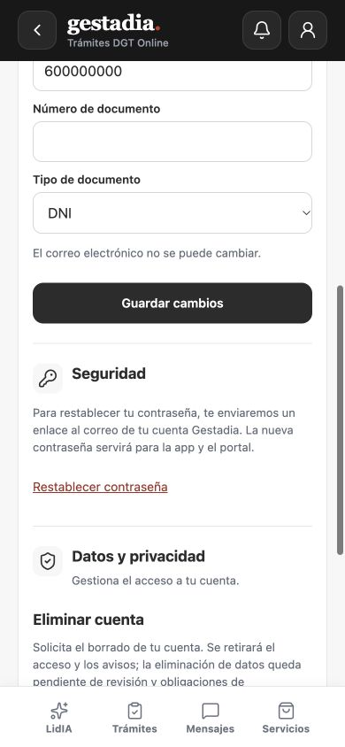
La contraseña da acceso tanto al Portal como a la APP.
iPhone 17 / iOS 26.5, copia Debug configurada para el servidor ficticio. Build, instalación y arranque comprobados; pulsación/escritura automática bloqueadas en Device Hub.
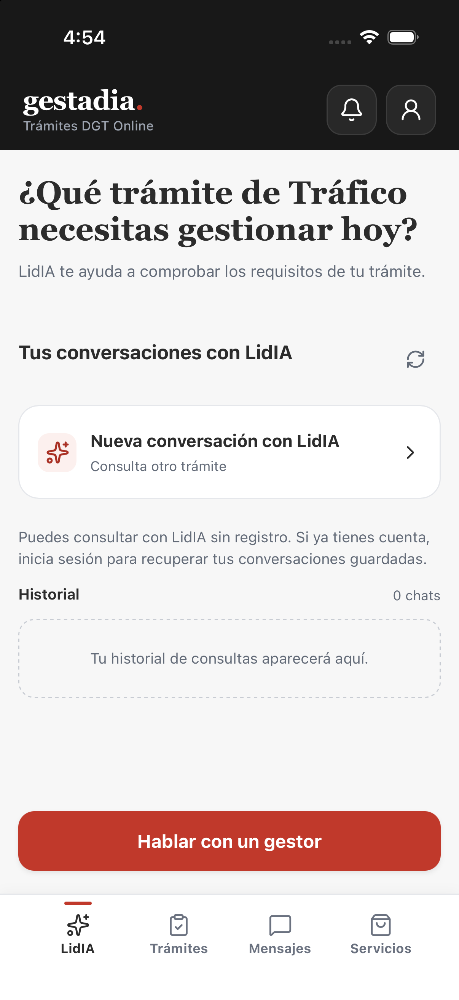
Capture Keyboard activado. No acredita ciclo completo nativo ni dispositivo físico.